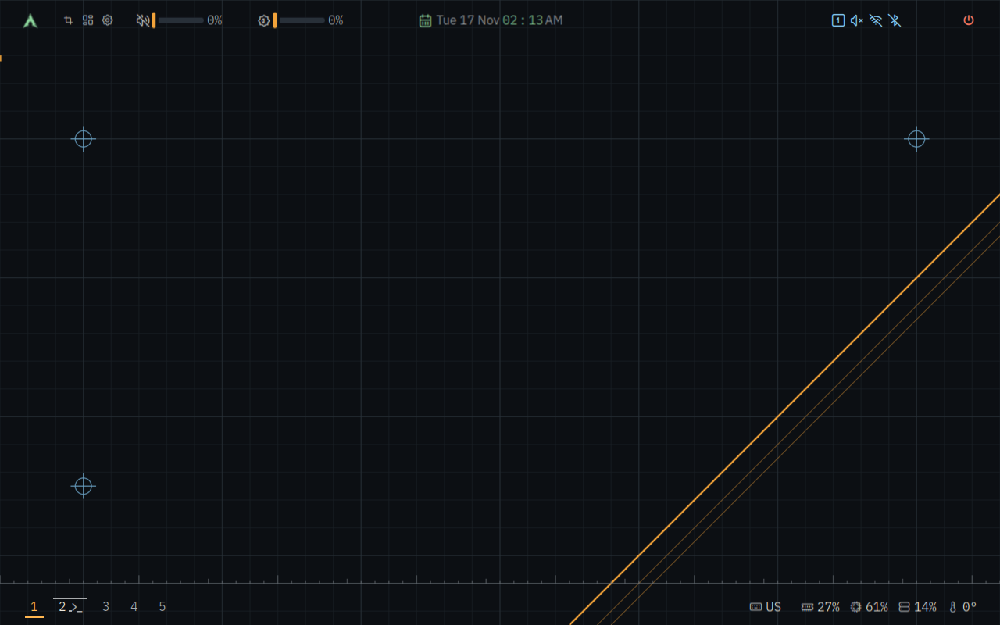
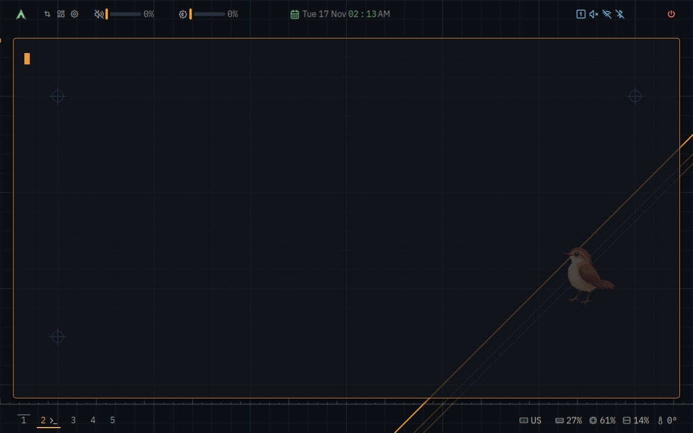
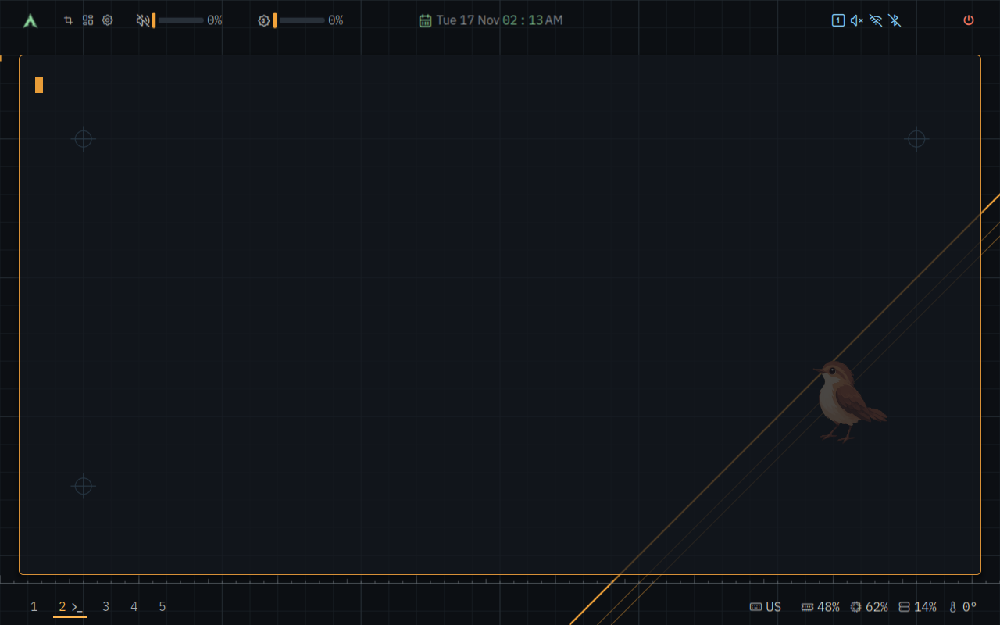
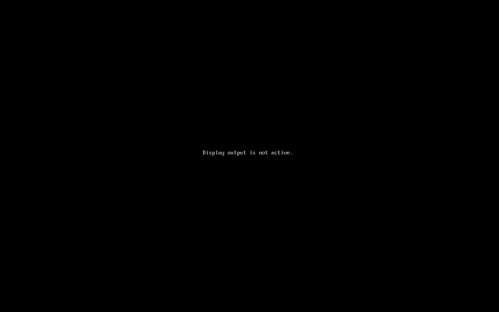
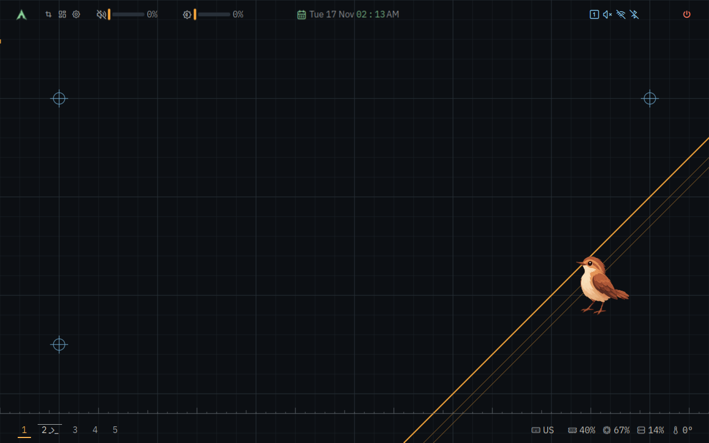
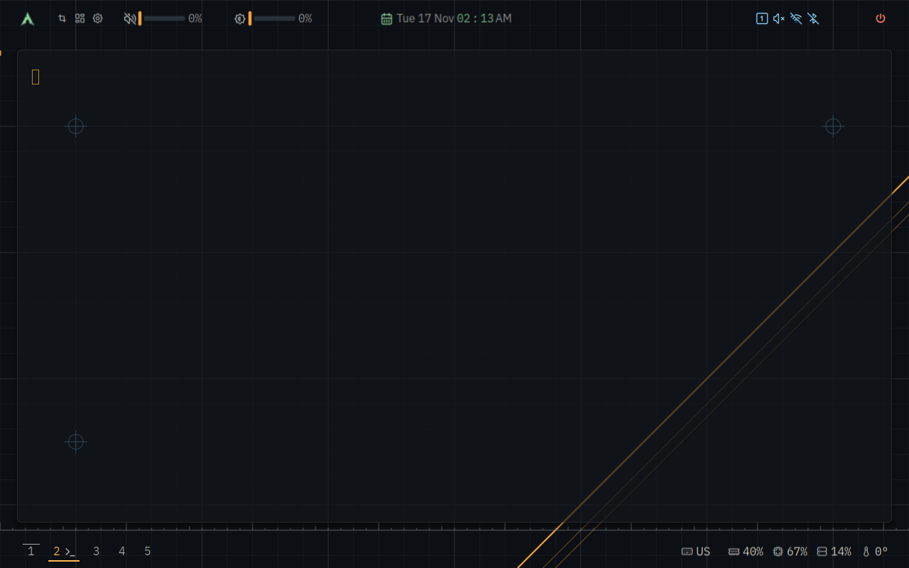

multimonitor/virtual-output-disable-reconnect PASS
20261117T021228Z-multimonitor-virtual-output-disable-reconnect-1 · attempt 1 · 58.805 s · class -
Reason: all proof checks passed
Instruction
Disable Virtual-2, switch to the preserved critical-window workspace on the remaining output, then reconnect Virtual-2.
Proof
| where | kind | note | detail | |
|---|---|---|---|---|
| ✅ | step 0 | probe | rc=0 | |
| ✅ | step 1 | probe | rc=0 | |
| ✅ | step 4 | probe | ok | |
| ✅ | step 5 | probe | ok | |
| ✅ | step 6 | probe | ok | |
| ✅ | step 7 | probe | rc=0 | |
| ✅ | step 8 | probe | ok | |
| ✅ | step 10 | probe | rc=0 | |
| ✅ | step 11 | probe | ok | |
| ✅ | proof 0 | probe | ok | |
| ✅ | proof 1 | probe | rc=0 | |
| ✅ | proof 2 | probe | ok | |
| ✅ | proof 3 | screenshot | ["005-reconnected-desktop-h0.png", "006-reconnected-desktop-h1.png"] |
Product and environment
| shell_sha | 433acea4b684a765a1c669e1f5f0ae5f9544d7d1 |
|---|---|
| config_sha | f1e98b1722f0eabbe1182c8c36634c6ee40e77b7 |
| horneroctl | horneroctl horneroctl-v0.2.0-preview45-2-gdaa03b0 (daa03b0) |
| horneroctl_sha256 | 4af1345cace70bd98300a14c8cfe37e50621d1e985cb8134417c08209cfabdda |
| engine | native |
| compositor | hyprland |
| hornero_qa | 0.1.0 |
| host_kernel | 7.3.4-arch1-2 |
| qemu | QEMU emulator version 11.1.3 |
| image | signal-s433acea-cf1e98b1-hdaa03b0.qcow2 |
| outputs | 2 |
| resolution | 1280x800 |
Screenshots














Actions
{"t": 20.018, "kind": "ready", "serial": []}
{"t": 40.388, "kind": "setup", "run": "horneroctl shell preset apply cockpit-clear --yes", "rc": 0, "stdout": "applied preset Cockpit Clear (cockpit-clear)", "stderr": ""}
{"t": 40.626, "kind": "setup", "run": "hyprctl monitors all -j | jq -e '([.[] | select(.name == \"Virtual-1\")] | length == 1) and ([.[] | select(.name == \"Virtual-2\")] | length == 1)'", "rc": 0, "stdout": "true", "stderr": ""}
{"t": 40.835, "kind": "setup", "run": "command -v kitty", "rc": 0, "stdout": "/usr/bin/kitty", "stderr": ""}
{"t": 41.104, "kind": "setup", "run": "hyprctl eval 'hl.dispatch(hl.dsp.focus({ monitor = \"Virtual-2\" }))'", "rc": 0, "stdout": "ok", "stderr": ""}
{"t": 41.383, "kind": "setup", "run": "hyprctl monitors -j | jq -e 'any(.[]; .name == \"Virtual-2\" and .focused == true)'", "rc": 0, "stdout": "true", "stderr": ""}
{"t": 41.661, "kind": "setup", "run": "setsid -f kitty --title 'Hornero QA Critical Window' sleep 600 >/tmp/hornero-qa-critical-window.log 2>&1", "rc": 0, "stdout": "", "stderr": ""}
{"t": 42.532, "kind": "setup", "run": "for _ in $(seq 1 20); do\n [ \"$(hyprctl clients -j | jq '[.[] | select(.title == \"Hornero QA Critical Window\")] | length')\" = 1 ] && exit 0\n sleep 0.5\ndone\nexit 1\n", "rc": 0, "stdout": "", "stderr": ""}
{"t": 42.872, "kind": "setup", "run": "jq -n --argjson monitors \"$(hyprctl monitors -j)\" --argjson clients \"$(hyprctl clients -j)\" '[$monitors[] | {monitor: .id, workspace: .activeWorkspace.id}] as $active | [$clients[] as $client | select($client.title == \"Hornero QA Critical Window\" and $client.monitor == ($monitors[] | select(.name == \"Virtual-2\") | .id) and $client.mapped == true and ($client.hidden // false) == false) | select(any($active[]; .monitor == $client.monitor and .workspace == $client.workspace.id))] | length' | grep -qx 1", "rc": 0, "stdout": "", "stderr": ""}
{"t": 43.075, "kind": "setup", "run": "cat > /tmp/hornero-qa-display-off <<'EOS'\n#!/bin/sh\nhyprctl eval 'hl.monitor({ output = \"Virtual-2\", disabled = true })' >/tmp/hornero-qa-display-off.result 2>&1\nEOS\nsed -i 's/^ //' /tmp/hornero-qa-display-off\nchmod 700 /tmp/hornero-qa-display-off\n", "rc": 0, "stdout": "", "stderr": ""}
{"t": 43.283, "kind": "setup", "run": "cat > /tmp/hornero-qa-display-on <<'EOS'\n#!/bin/sh\nhyprctl eval 'hl.monitor({ output = \"Virtual-2\", disabled = false, mode = \"1280x800@60\", position = \"1280x0\", scale = 1 })' >/tmp/hornero-qa-display-on.result 2>&1\nEOS\nsed -i 's/^ //' /tmp/hornero-qa-display-on\nchmod 700 /tmp/hornero-qa-display-on\n", "rc": 0, "stdout": "", "stderr": ""}
{"t": 43.476, "kind": "setup", "run": "hyprctl eval 'hl.bind(\"CTRL + ALT + Z\", hl.dsp.exec_cmd(\"sh /tmp/hornero-qa-display-off\"))'", "rc": 0, "stdout": "ok", "stderr": ""}
{"t": 43.667, "kind": "setup", "run": "hyprctl eval 'hl.bind(\"CTRL + ALT + X\", hl.dsp.exec_cmd(\"sh /tmp/hornero-qa-display-on\"))'", "rc": 0, "stdout": "ok", "stderr": ""}
{"t": 43.866, "kind": "setup", "run": "hyprctl binds -j | jq -e 'any(.[]; .key == \"Z\") and any(.[]; .key == \"X\")'", "rc": 0, "stdout": "true", "stderr": ""}
{"t": 49.963, "kind": "tokens", "theme": "hornero-signal-night", "roles": 34}
{"t": 49.963, "kind": "probe", "step": 0, "value": {"run": "hyprctl version", "save": "compositor-version.txt"}, "note": null}
{"t": 50.187, "kind": "probe", "step": 1, "value": {"run": "kitty --version", "save": "window-client-version.txt"}, "note": null}
{"t": 50.396, "kind": "screenshot", "step": 2, "value": "before-output-disable", "note": null}
{"t": 50.486, "kind": "key", "step": 3, "value": "ctrl+alt+z", "note": null}
{"t": 50.587, "kind": "probe", "step": 4, "value": {"run": "hyprctl binds -j | jq -c '[.[] | select(.key == \"Z\" or .key == \"X\")]'", "contains": "Z", "retry_s": 5, "save": "registered-output-binds.json"}, "note": null}
{"t": 50.822, "kind": "probe", "step": 5, "value": {"run": "cat /tmp/hornero-qa-display-off.result", "contains": "ok", "retry_s": 5, "save": "display-off-command.txt"}, "note": null}
{"t": 51.028, "kind": "probe", "step": 6, "value": {"run": "hyprctl monitors -j | jq length", "equals": "1", "retry_s": 10, "save": "disconnected-monitors.json"}, "note": null}
{"t": 51.228, "kind": "probe", "step": 7, "value": {"run": "jq -n --argjson monitors \"$(hyprctl monitors -j)\" --argjson workspaces \"$(hyprctl workspaces -j)\" --argjson clients \"$(hyprctl clients -j)\" '{monitors: [$monitors[] | {id, name, activeWorkspace}], workspaces: [$workspaces[] | {id, name, monitor, windows}], critical_window: [$clients[] | select(.title == \"Hornero QA Critical Window\") | {address, mapped, hidden, monitor, workspace}]}'", "save": "disconnected-window-state.json"}, "note": null}
{"t": 51.459, "kind": "probe", "step": 8, "value": {"run": "jq -n --argjson monitors \"$(hyprctl monitors -j)\" --argjson clients \"$(hyprctl clients -j)\" '[$monitors[] | .id] as $active_monitors | [$clients[] as $client | select($client.title == \"Hornero QA Critical Window\" and $client.mapped == true and ($active_monitors | index($client.monitor) != null))] | length'", "equals": "1", "retry_s": 5, "save": "disconnected-window-preserved.json"}, "note": null}
{"t": 51.682, "kind": "key", "step": 9, "value": "super+2", "note": null}
{"t": 51.784, "kind": "probe", "step": 10, "value": {"run": "jq -n --argjson monitors \"$(hyprctl monitors -j)\" --argjson workspaces \"$(hyprctl workspaces -j)\" --argjson clients \"$(hyprctl clients -j)\" '{monitors: [$monitors[] | {id, name, activeWorkspace}], workspaces: [$workspaces[] | {id, name, monitor, windows}], critical_window: [$clients[] | select(.title == \"Hornero QA Critical Window\") | {address, mapped, hidden, monitor, workspace}]}'", "save": "disconnected-window-visible-state.json"}, "note": null}
{"t": 52.06, "kind": "probe", "step": 11, "value": {"run": "jq -n --argjson monitors \"$(hyprctl monitors -j)\" --argjson clients \"$(hyprctl clients -j)\" '[$monitors[] | {monitor: .id, workspace: .activeWorkspace.id}] as $active | [$clients[] as $client | select($client.title == \"Hornero QA Critical Window\" and $client.mapped == true and ($client.hidden // false) == false) | select(any($active[]; .monitor == $client.monitor and .workspace == $client.workspace.id))] | length'", "equals": "1", "retry_s": 5, "save": "disconnected-window-on-active-output.json"}, "note": null}
{"t": 52.28, "kind": "screenshot", "step": 12, "value": "critical-window-visible-on-remaining-output", "note": null}
{"t": 52.364, "kind": "key", "step": 13, "value": "ctrl+alt+x", "note": null}
{"t": 52.466, "kind": "note", "step": 14, "value": "Allow the re-enabled virtual head to repaint before the final capture.", "note": "Allow the re-enabled virtual head to repaint before the final capture."}
{"t": 52.466, "kind": "pause", "step": 15, "value": 3, "note": null}
Logs: logs/ · machine-readable: run.json, result.json, assertions.json, actions.jsonl